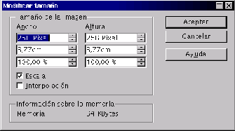

Next: Escala
Up: Crear
Previous: La ventana principal
Índice General
Para cambiar las dimensiones de la imagen se elige en el menú [Modificar] la opción [Modificar]
tamaño, que abre el cuadro de diálogo Modificar tamaño. Esta operación hay que evitarla, si se puede, ya que
siempre implica una pérdida de calidad. El programa escala la imagen, y para ello debe añadir o eliminar
puntos, cosa que es imposible de realizar conservando todas las características.
Figura 5.50:
Modificar tamaño
|

|
5.50
Proyecto Cursos - LuCAS - http://lucas.hispalinux.es/htmls/cursos.html